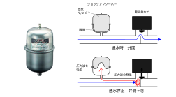

2023年
問題111 給水設備に関する次の記述のうち，最も不適当なものはどれか．
（1）飲料用の貯水槽の上部には，原則として飲料水の配管以外の機器・配管を設けてはならない．
（2）ウォータハンマ防止器は，防止器の破壊を避けるため急閉止弁などから十分離れた箇所に設ける．
（3）貯水槽の流入管は，ボールタップや電極棒の液面制御に支障がないように，波立ち防止策を講じる．
（4）厨房の給水配管では，防水層の貫通を避ける．
（5）水の使用量が極端に減少する期間がある建築物の貯水槽では，少量貯水用の水位制御電を併設し，使用水量の状態に合わせて水位設定を切り替えて使用する．
2023年
問題111 正解（2） 頻出度AAA
ウォータハンマ防止器（ショックアブソーバともいう，2023-111-1図）は内部の気体によってウォータハンマの圧力上昇を吸収する．設置する場合はできるだけ発生箇所の近くに設け，エアチャンバー内の空気を補給できるように考慮する．

出典（左写真） 株式会社エスコ
https://www.esco-net.com/wcs/escort/items/ItemDetail/EA466-3
-(1) 建築基準法に基づく国土交通省の告示「建築物に設ける飲料水の配管設備及び排水のための配管設備の構造方法を定める件」は，『給水タンク等の上にポンプ，ボイラー，空気調和機等の機器を設ける場合においては，飲料水を汚染することのないように衛生上必要な措置を講ずること』としている．
空気調和・衛生工学会規格「給排水衛生設備基準・同解説（SHASE-S 206）」では，『水槽内部を，水槽の機能に無関係な配管を貫通させてはならない．また，上水以外の配管は，水槽の上方を横切ってはならない．』としている．